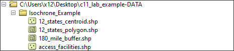
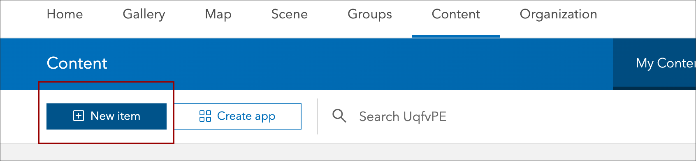
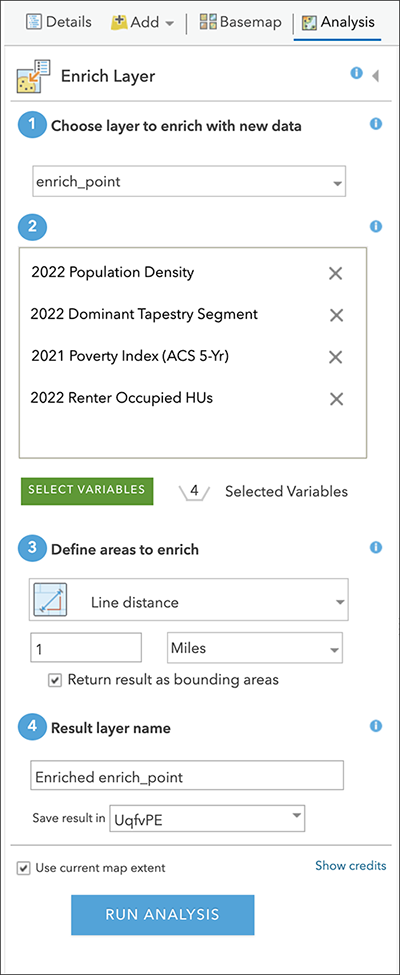
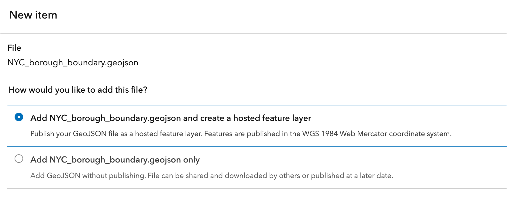

Assignment Preamble
This week’s assignment will further develop online, web-based mapping and analysis introduced in the lecture demo and in today’s 11th technical lab.
In addition to creating web-based basemap products, ArcGIS Online offers a series of analysis tools that are significantly enhanced in the ArcGIS Online environment beyond desktop GIS capabilities. In this lab we will cover the following:
- Finalizing and publishing via Share options a ArcGIS Online web map.
- Create Isochrones from both polygon features and points.
- Geocode a table of addresses, also known as Batch Geocoding.
- Enrich a feature layer with ArcGIS Online data through a process known as geographic apportionment.
- Create a density/interpolation map from a series of points.
Data

Lab Step 1
To start, we will navigate to the Map Viewer Classic and discuss its difference with Map Viewer:
Next, we will navigate to our Content tab where are first web map should now be located:
First, we will set the permissions for the web map to Public, and then create a Share URL and then view the results:
Next, open in Map Viewer Classic and Toogle On the Share Tab located at the Top Ribbon:
Copy/Paste the Share Link in a separate Incognito Web Browser Tab:
Lab Step #2
Next, we will connect ArcGIS Online to your ArcGIS ArcMap Desktop Software. To do this, open ArcGIS ArcMap Desktop and point to the Web Map first created in Mapbox, now located in Content at ArcGIS Online.
Lab Step #3
With the C11 Assignment Data Package Download extracted to your working directory, we will load data needed to run two Isochrone Maps. The first will feature a 3 hour drive distance FROM polygon feature; the second 3 hours FROM the centroid of the polygon Features.
For this demonstration we will use data that reflects the locations of abortion facilities in the lower 48, and those states polygons that have currently banned abortion. The data originates from Abortion Facility Database - ANSIRH. Context for banned states is currently tracked by the NYTIMES. In our analysis, we want to know the geographic extent of traveling from the center (centroid) of each of the 12 states. We will compare this distance to a 180 mile straight-line buffer as well as abortion facilities located outside the banned states. We will then run a summarization to find the facilities that are within the Isochrone for 3 hours travel time.
Within the Content Tab, open import to ArcGIS Online and point to the following features (ArcGIS Online requires uploads as .zip format:


Once all necessary features are loaded to ArcGIS Online, we will run Isochrones (Create Drive-Time Areas):
Populate the tool as follows:
Review the Isochrone Result at both small and large scales:
Lab Step #4
Next, we will turn to Geocoding a table of addresses that do NOT have latitude and longitude necessary for mapping address points. This is a typical data management and preparation task in GIS: generating coordinates necessary for mapping from either 1 address or a ‘batch’ of addresses in tabular .csv format.
The example dataset is from the NY Facilities Database
The Department of City Planning aggregates information about 30,000+ facilities and program sites that are owned, operated, funded, licensed, or certified by a City, State, or Federal agency in the City of New York into a central database called the City Planning Facilities Database (FacDB). These facilities generally help to shape quality of life in the city’s neighborhoods, and this dataset is the basis for a series of planning activities. This public data resource allows all New Yorkers to understand the breadth of government resources in their neighborhoods.
Note to Users: FacDB is only as good as the source data it aggregates, and the Department of City Planning cannot verify the accuracy of all records. Please read more about specific data and analysis limitations before using this data. Limitations include missing records, duplicate records, and the inclusion of administrative sites instead of service locations.
The results have been filtered to records where the owner is Brooklyn Public Library:
To start, create a New Items within your Content Section:
Next, point to the FacDB_20220630.csv table, and create a feature layer from the table:
Next, match the table locational fields to the Location Types:
Check and proceed to review of the resulting Geocode:
Lab Step #4
In this step, we will turn to Enrichment Layer
The Enrich Layer tool provides demographic and landscape data for the people, places, and businesses associated with point, line, or area data locations. It uses ArcGIS GeoEnrichment Service or a custom GeoEnrichment service.
The input data to be enriched can be point, line, or area features. The Enrich Layer tool uses data apportionment to provide accurate data estimates, even for custom geometry.
How data apportionment works:
The Enrich Layer tools in ArcGIS Pro, ArcGIS Online, and the GeoEnrichment service use a data apportionment algorithm to redistribute demographic, business, economic, and landscape variables to input polygon features. The algorithm analyzes each polygon to be enriched relative to a point dataset and a detailed dataset of reporting unit polygons that contain attributes for the selected variables. Based on how each polygon being enriched overlays these datasets, the algorithm determines the appropriate amount of each variable to assign.

The input will be enrich_point.geojson located at the intersection of 5th and 13th in front of our current building location:
Like data uploads thus far, load enrich_point.geojson to ArcGIS Online Contents section:
Proceed to opening the new feature layer in Classic Map Viewer. Navigate to Analysis > Enrich Layer:
Input the enrich_point feature layer to the tool. We will select a series of variables to return, and then review the enriched result:

Lab Step #5
Finally we will turn to Interpolation Surfaces and Density Surfaces. Sometimes referred to a ‘heat maps’, these types of surface accepts points features as an input, then interpolates values or estimate value concentrations in the spaces between the points in the case of interpolation; and at the points in the case of density,for a smooth, continuous surface. Interpolation and density can be helpful to better see the pattern of the points data, and it acts as a predictive surface with limited sample point locations.
The data for the density example will be Vehicle Crashes in NYC within the time frame and latitude values as not NULL as noted below:
To start, input the Motor_Vehicle_Collisions_-_Crashes.csv and accept Latitude and Longitude as the locational fields:
Next, import the NYC_borough_boundary.geojson layer to ArcGIS Online Contents.

Next, import the NYC_borough_boundary.geojson layer to ArcGIS Online Contents.
Create a new map with both the Crash data and the NYC borough boundaries as layers in the new map. Next, navigate to Analysis > Analyze Patterns > Calculate Density and populate the tool as follows:
Once complete, we will review the resulting density surface and compare it to the original crash points input.